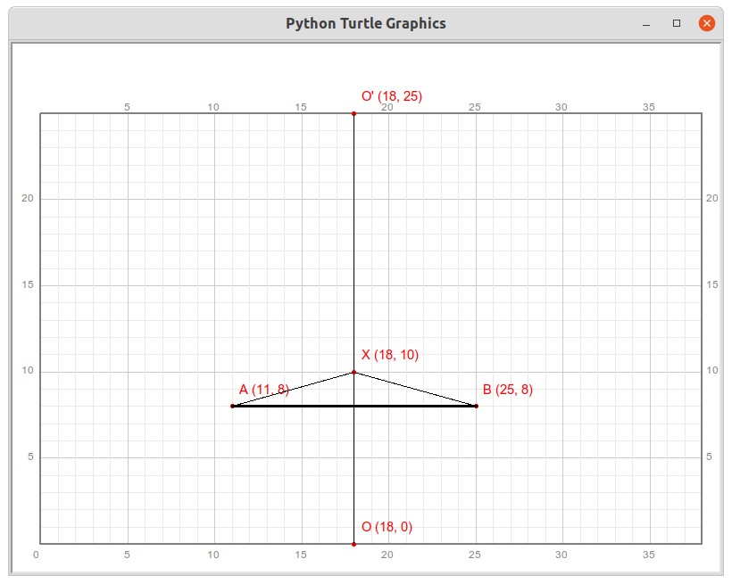
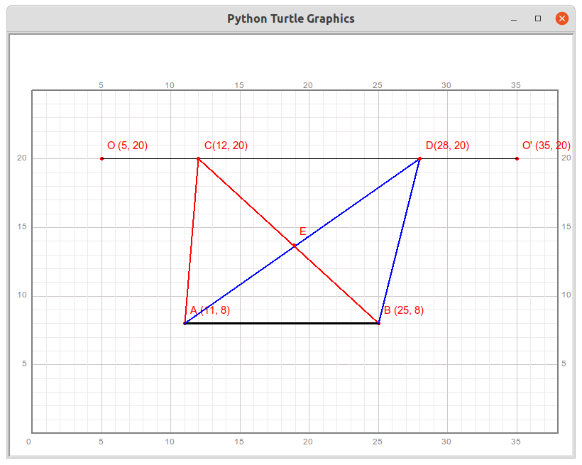
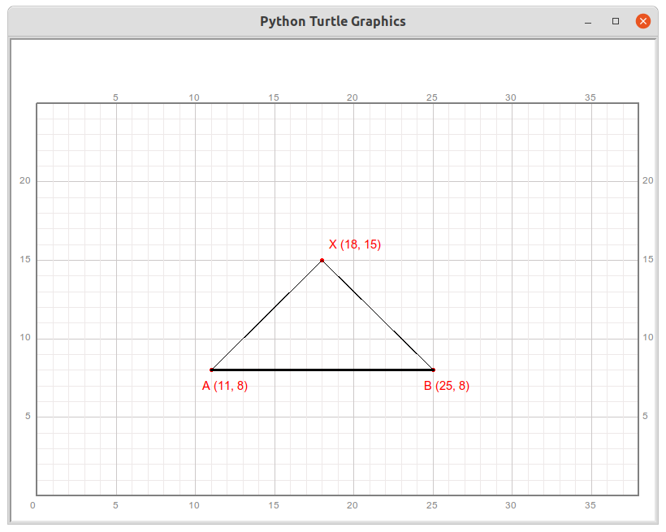

第24讲 三角形和它的面积
内容
第24讲 三角形和它的面积¶
Lecture 23. Triangle and its area
Assignments 作业¶
In this lecture, we learned that two identical triangles can be joined together to form a parallelogram. In fact, by splicing two identical triangles(ex. T1), more than one shape of parallelogram can be formed. Only one of them was introduced in the lecture. In this assignment, please try to draw two other parallelograms that are formed by 2 identical T1. mark them properly (You may make appropriate translations for T1).在本讲课程里，我们学到两个完全一样的三角形可以拼接成一个平行四边形。事实上，拼接两个完全一样的三角形T1可以得到不止一种形状的平行四边形，本讲中得到的只是其中的一个，还可以拼出其它形状的平行四边形。请尝试绘制出另外两个平行四边形，并做好标记（可以对T1作适当的平移）。
[1]:
from turtle import setup, reset, pu, pd, bye, left, right, fd, bk, screensize
from turtle import goto, seth, write, ht, st, home, dot, pen, speed
from qianglib import prepare_paper, draw_grid, mark, lines, line, polygon, text
from qianglib import get_center
[41]:
width, height = 800, 600
setup(width, height, 0, 0)
prepare_paper(width, height, scale=20, min_x=0, min_y=0, max_y=25)
[3]:
def translate(shape, offset):
'''move a shape certain distance defined by offset
params:
shape: a point, line, or a polygon;
data type: tuple or list of tuple
example: (2, 4), [(1, 2), (3, 5)], [(1, 2), (3, 5), (5, 6)]
offset: distance
data type: tuple (dx, dy)
example: (9, 9)
return a tuple or list of tuple representing a point, or a line, polygon.
'''
new_shape = None
if type(shape) == tuple: # a point
new_shape = shape[0]+offset[0], shape[1]+offset[1]
elif type(shape) == list: # a line or a polygon
new_shape = []
for point in shape:
new_point = point[0] + offset[0], point[1]+offset[1]
new_shape.append(new_point)
else:
pass
return new_shape
[ ]:
prepare_paper(width, height, scale=20, min_x=0, min_y=0, max_y=25)
[ ]:
A, B, C = (5, 15), (13, 15), (7, 19)
triangle1 = translate([A, B, C], (10, -5))
polygon(triangle1, color="black", line_width=3,
side_texts=["b"],
marker_texts = list("ABC"),
marker_offsets = [(0, -1), (0, -1), (0, 0)],
center_text = "T1",
center_text_offset = (0, -0.5),
center_text_font = ("Arial", 10, "italic")
)
[ ]:
# write your code here
Follow the steps to draw, and Answer the questions 按流程编程绘图并回答问题
Given two points A(11, 8) and B(25, 8), mark them, connect them to draw a line AB with black color and line width of 3. 给定两个点，分别为A(11, 8), B(25, 8)，标记这两个点，并连接这两点得到线段AB，用黑色，线宽为3绘制线段AB；
Draw another line between points O(18, 0) and O’(18,25) with black color and line width of 1; 用黑色，线宽为1连接点O(18, 0), O’(18,25)，形成线段OO’；
Randomly generate a point, X(18, 10) for example, on line OO’ by calling the method
randint， draw the line of AX and AB with black color and line width of 1. Estimate the length of AX and BX and the angle AXB with you eyes.调用randint方法在线段OO’中随机选定一个点，假定生成的点是(18, 10)，用X标记。用黑色、线宽为1连接AX, BX,得到一个三角形ABX。记录点X的坐标，用肉眼估计线段AX，BX的长度，用肉眼比较角AXB与90度角的大小关系，记在下面的表格里。By far, you should have a figure like the following: 到目前位置，你应该能够绘制得到如下图： 
Repeat the third step(C) 10 times, mark the point randomly generated with the letter: C, D, E, F, G, H, I, J, K, L. Fill the following table.重复10次上一步骤，每次随机生成的点分别标记为：C, D, E, F, G, H, I, J, K, L。并把相关结果填入表格。
Point X
Length AX
Length BX
is Angle AXB > 90?
X (18, 10)
8
8
Yes
C ( , )
D ( , )
E ( , )
F ( , )
G ( , )
H ( , )
I ( , )
J ( , )
K ( , )
L ( , )
Observe the data in the table, Do you have any findings? Write down you findins here. 观察分析填写好的表格，你能得到一些什么发现？ 用文字写下你的发现。
[ ]:
prepare_paper(width, height, scale=20, min_x=0, min_y=0, max_y=25)
[ ]:
A, B = (11, 8), (25, 8)
O, Op = (18, 0), (18, 25)
mark(A, "A "+str(A))
mark(B, "B "+str(B))
mark(O, "O "+str(O))
mark(Op, "O' "+str(Op))
line(A, B, color="black", line_width=3)
line(O, Op, color="black", line_width=1)
[ ]:
X = (18, 10)
mark(X, "X "+str(X))
line(A, X, color="black", line_width=1)
line(B, X, color="black", line_width=1)
[ ]:
Follow the steps to draw, and Answer the questions 按流程编程绘图并回答问题
Given two points A(11, 8) and B(25, 8), mark them, connect them to draw a line AB with black color and line width of 3. 给定两个点，分别为A(11, 8), B(25, 8)，标记这两个点，并连接这两点得到线段AB，用黑色，线宽为3绘制线段AB；
Draw another line between points O(5, 20) and O’(35, 20) with black color and line width of 1; 用黑色，线宽为1连接点O(18, 0), O’(18,25)，形成线段OO’；
Randomly generate a point, X(18, 10) for example, on line OO’ by calling the method
randint， draw the line of AX and AB with black color and line width of 1. Estimate the length of AX and BX and with you eyes. Calculate the area of the triangle AXB. 调用randint方法在线段OO’中随机选定一个点，假定生成的点是(18, 10)，用X标记。用黑色、线宽为1连接AX, BX,得到一个三角形ABX。记录点X的坐标，用肉眼估计线段AX，BX的长度，计算三角形AXB的面积，记在下面的表格里（第一行示例）。By far, you should have a figure like the following: 到目前位置，你应该能够绘制得到如下图： 
Repeat the third step(C) 10 times, mark the point randomly generated with the letter: C, D, E, F, G, H, I, J, K, L. Fill the following table.重复10次上一步骤，每次随机生成的点分别标记为：C, D, E, F, G, H, I, J, K, L。并把相关结果填入表格。
Point X
Length AX
Length BX
Area of AXB
X (18, 20)
14
14
84
C ( , )
D ( , )
E ( , )
F ( , )
G ( , )
H ( , )
I ( , )
J ( , )
K ( , )
L ( , )
Observe the data in the table, Do you have any findings? Write down you findins here. 观察分析填写好的表格，你能得到一些什么发现？ 用文字写下你的发现。
[49]:
prepare_paper(width, height, scale=20, min_x=0, min_y=0, max_y=25)
[50]:
A, B = (11, 8), (25, 8)
O, Op = (5, 20), (35, 20)
mark(A, "A "+str(A))
mark(B, "B "+str(B))
mark(O, "O "+str(O))
mark(Op, "O' "+str(Op))
line(A, B, color="black", line_width=3)
line(O, Op, color="black", line_width=1)
[5]:
X = (18, 20)
mark(X, "X "+str(X))
line(A, X, color="black", line_width=1)
line(B, X, color="black", line_width=1)
[8]:
from random import randint
[9]:
X_min, X_max = O[0], Op[0]
X = (randint(X_min, X_max+1) ,O[1])
print(X)
(34, 20)
[10]:
from random import randint
def get_ten_different_integer(minimal, maximal):
result = []
index = 0
while index < 10:
rand_num = randint(minimal, maximal+1)
# check if rand_num exists in result
# if Yes, don't append rand_num again, index doest increase
# if No, append rand_num into result, index += 1
return result
[11]:
from random import randint
def is_passed_test(result, total_num=10):
l = len(result)
if l != total_num:
return False
for i in range(l-1):
for j in range(i+1, l):
if result[i] == result[j]:
print(i, result[i], result)
return False
return True
def verify_method_100_times(your_method, minimal, maximal, total_number=10):
failed_times = 0
total_times = 1000
for i in range(total_times):
result = your_method(minimal, maximal, total_number)
if not is_passed_test(result, total_number):
failed_times += 1
if failed_times != 0:
print("you failed pass the test! {}/{} passed".format(
total_times-failed_times, total_times))
else:
print("Congratulations, passed! {}/{} passed".format(
total_times-failed_times, total_times))
[12]:
result = [1, 2, 3, 4, 5, 6, 7, 12, 9, 10]
is_passed_test(result, len(result))
[12]:
True
[13]:
minimal, maximal = 5, 35
[14]:
def jason_method(minimal, maximal, total_num=10):
result = []
index = 0
while index < total_num:
ran_num = randint(minimal, maximal+1)
index += 1
if ran_num in result:
index -= 1
else:
result.append(ran_num)
return result
def sophie_method(minimal, maximal, total_num=10):
result = []
i = 0
while i < total_num:
ran_num = randint(minimal, maximal+1)
if ran_num in result:
pass
else:
result.append(ran_num)
i += 1
return result
def yunzi_method(minimal, maximal, total_num=10):
result = []
# TODO: nothing
return result
def tony_method(minimal, maximal, total_num=10):
result = []
i = 0
ran_num = randint(minimal, maximal)
while i < total_num:
ran_num = randint(minimal, maximal+1)
if ran_num in result:
i += 0
pass
else:
result.append(ran_num)
i += 1
return result
[15]:
verify_method_100_times(jason_method, minimal, maximal)
Congratulations, passed! 1000/1000 passed
[16]:
verify_method_100_times(sophie_method, minimal, maximal)
Congratulations, passed! 1000/1000 passed
[17]:
verify_method_100_times(yunzi_method, minimal, maximal)
you failed pass the test! 0/1000 passed
[18]:
verify_method_100_times(tony_method, minimal, maximal)
Congratulations, passed! 1000/1000 passed
[51]:
Xs = tony_method(O[0], Op[0], 2)
points = [(12, 20), (28, 20)]
colors = ['red', 'blue', 'cyan', 'yellow', 'green', 'orange', 'brown', 'black']
[52]:
for i in range(2):
#point = (X, O[1])
#color_index = randint(0, 2)
line(A, points[i], line_width=2, color=colors[i])
line(B, points[i], line_width=2, color=colors[i])
#points.append(point)
[53]:
print(len(points))
markers = ["C", "D"]
i = 0
while i < len(points):
mark(points[i], markers[i]+str(points[i]))
i += 1
2
[54]:
E = (18.9, 13.7)
mark(E, "E")
Follow the steps to draw, and Answer the questions 按流程编程绘图并回答问题
Given two points A(11, 8) and B(25, 8), mark them, connect them to draw a line AB with black color and line width of 3. 给定两个点，分别为A(11, 8), B(25, 8)，标记这两个点，并连接这两点得到线段AB，用黑色，线宽为3绘制线段AB；
Give the third point C(18, 15), connect AC and AB form a triangle ABC. It is true that the angle ACB is \(90^{\circ}\). A triangle with one right angle is called a right triangle. If you measure the length of AC and BC, you will find that they are equal. 给定第三个点C(18, 15), 连接AC和AB形成三角形ABC，那么\(\angle\)ACB等于\(90^{\circ}\)。这样有一个角是直角的三角形称为三角形。如果你测量AC和BC的长度，你会发现他们一样长。
By far, you should have a figure like the following: 到目前位置，你应该能够绘制得到如下图： 
In the drawing paper, can you find another point X such that the triangle AXB is a right triangle with angle AXB is \(90^{\circ}\)? 在绘图纸上，你能找到另外一个点X，使得三角形AXB是一个直角三角形并且\(\angle\)AXB等于\(90^{\circ}\)吗？
In the drawing paper, can you find other points Y such that the triangle AYB is a right triangle with the angle YAB is \(90^{\circ}\)? 在绘图纸上，你能找到其它一些点Y，使得三角形YAB是直角三角形并且\(\angle\)YAB等于\(90^{\circ}\)吗？
In the drawing paper, can you find other points Z such that the triangle AZB is a right triangle with the angle ZBA is \(90^{\circ}\)? 在绘图纸上，你能找到其它一些点Z，使得三角形ZBA是直角三角形并且\(\angle\)ZBA等于\(90^{\circ}\)吗？
Observe the triangles you draw, Write down your findings here. 观察你绘制的所有三角形，并在这里写下你的发现。
[ ]:
prepare_paper(width, height, scale=20, min_x=0, min_y=0, max_y=25)
[ ]:
A, B = (11, 8), (25, 8)
mark(A, "A "+str(A), offset=(-0.5, -1.5))
mark(B, "B "+str(B), offset=(-0.5, -1.5))
line(A, B, color="black", line_width=3)
[ ]:
X = (18, 15)
mark(X, "X "+str(X))
line(A, X, color="black", line_width=1)
line(B, X, color="black", line_width=1)